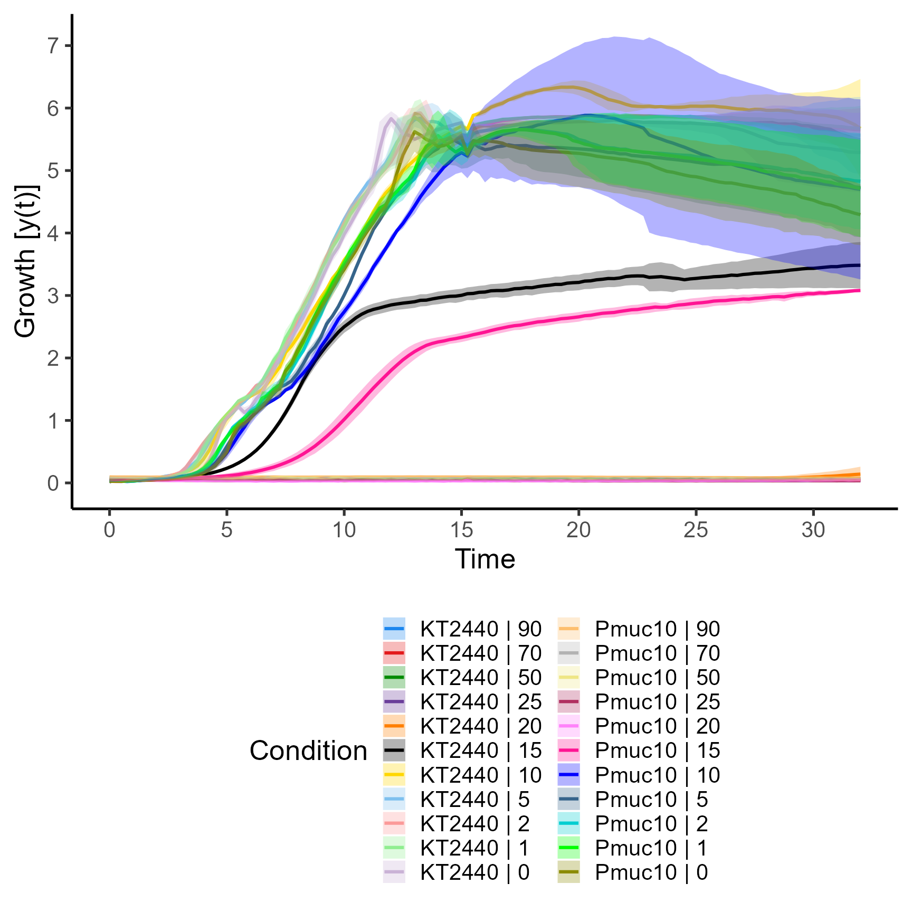

Quantitiative Growth Curve Evaluation with Package `QurvE`
Nicolas T. Wirth
2022-10-20
Source:vignettes/vignette.Rmd
vignette.RmdPlease note: This vignette will be updated from time to time when new features are implemented. Please find the most recent version at the QurvE GitHub repository.
Introduction
In virtually all disciplines of biology dealing with living
organisms, from classical microbiology to applied biotechnology, it is
routine to characterize the growth of the species under
study. QurvE provides a suite of analysis tools to make
such growth profiling quick, efficient, and reproducible. In addition,
it allows the characterization of fluorescence data
for, e.g., biosensor characterization in plate reader experiments
(further discussed in the vignette Quantitiative Fluorescence Curve
Evaluation with Package QurvE). All computational
steps to obtain an in-depth characterization are combined into
user-friendly workflow functions and a range of plotting
functions allow the visualization of fits and the comparison of organism
performances.
Any physiological parameter calculated (e.g., growth rate µ, doubling time tD, lag time \(\lambda\), density increase \(\Delta\)Y, or equivalent fluorescence parameters) can be used to perform a dose-response analysis to determine the half-maximal effective concentration (EC50).
The package is build on the foundation of the two R packages from
Kahm et al. (2010) and Petzoldt (2022). QurvE was designed
to be usable with minimal prior knowledge of the R programming language
or programming in general. You will need to be familiar with the idea of
running commands from a console or writing basic scripts. For R
beginners, this is
a great starting point, there are some good resources here and we
suggest using the RStudio application. It
provides an environment for writing and running R code.
With consideration for R novices, QurvE
establishes a framework in which a complete, detailed growth curve
analysis can be performed in two simple steps:
Read data in custom format or parse data from a plate reader experiment.
Run workflow, including fitting of growth curves, dose-response analysis, and rendering a report that summarizes the results.
All computational results of a workflow are stored in a data
container (list) and can be visualized by passing them to the generic
function plot(list_object). QurvE further
extends the user’s control over the fits by defining thresholds and
quality criteria, allows the direct parsing of data from plate reader
result files, and calculates parameters for an additional growth phase
(bi-phasic growth).
Installation
Development version
Install the must current version with package
devtools:
install.packages("devtools")
library(devtools)
install_github("NicWir/QurvE")Growth profiling methods
Three methods are available to characterize growth curves:
Fit parametric growth models to (log-transformed) growth data
-
Determine maximum growth rates (µmax) from the log-linear part of a growth curve using a heuristic approach proposed as the “growth rates made easy”-method by Hall et al. (2014). Do do so,
QurvEuses code from the package Petzoldt (2022), but adds user-defined thresholds for (i) R2 values of linear fits, (ii) relative standard deviations (RSD) of estimates slopes, and (iii) the minimum fraction of total density increase (\(\Delta\)Y) a regression window should cover to be considered for the analysis. These thresholds ensure a more robust and reproducible identification of the linear range that best describes the growth curve. Additionally, parameters for a secondary growth phase can be extracted for bi-linear growth curves.1
The algorithm works as follows:Fit linear regressions [with the Theil-Sen estimator (Sen, 1968; Theil, 1992)] to all subsets of
hconsecutive, log-transformed data points (sliding window of sizeh). If, for example,h=5, fit a linear regression to points 1 \(\dots\) 5, 2 \(\dots\) 6, 3 \(\dots\) 7 and so forth.Find the subset with the highest slope \(\mu_{max}\). Do the R2 and RSD values of the regression meet the defined thresholds and do the data points within the regression window account for at least a defined fraction of the total density increase? If not, evaluate the regression with the second highest slope, and so forth.
Include also the data points of adjacent subsets that have a slope of at least a \(defined \space quota \times \mu_{max}\), e.g., all regression windows that have at least 95% of the maximum slope.
Fit a new linear model to the extended data window identified in step iii.
If
biphasic = TRUE, the following steps are performed to define a second growth phase:Perform a smooth spline fit on the data with a smoothing factor of 0.5.
Calculate the second derivative of the spline fit and perform a smooth spline fit of the derivative with a smoothing factor of 0.4.
Determine local maxima and minima in the second derivative.
Find the local minimum following \(\mu_{max}\) and repeat the heuristic linear method for later time values.
Find the local maximum before \(\mu_{max}\) and repeat the heuristic linear method for earlier time values.
Choose the greater of the two independently determined slopes as \(\mu_{max}2\).
-
Perform a smooth spline fit on (log-transformed) growth data and extract µmax as the maximum value of the first derivative1.
If
biphasic = TRUE, the following steps are performed to define a second growth phase:Determine local minima within the first derivative of the smooth spline fit.
Remove the ‘peak’ containing the highest value of the first derivative (i.e., \(\mu_{max}\)) that is flanked by two local minima.
Repeat the smooth spline fit and identification of maximum slope for later time values than the local minimum after \(\mu_{max}\).
Repeat the smooth spline fit and identification of maximum slope for earlier time values than the local minimum before \(\mu_{max}\).
Choose the greater of the two independently determined slopes as \(\mu_{max}2\).
Data formats
QurvE accepts files with the formats .xls,
.xlsx, .csv, .tsv, and .txt (tab
separated). The data in the files should be structured as shown in
Figure @ref(fig:data-layout). Alternatively, data parsers are available
that allow direct import of raw data from different culture instruments.
For a list of currently supported devices, please run
?parse_data.
Custom format
To ensure compatibility with any type of measurement and data type
(e.g., optical density, cell count, measured dimensions),
QurvE uses a custom data layout. Here the first column
contains time values and ‘Time’ in the top
cell, cells #2 and #3 are ignored. The remaining columns contain
measurement values and the following sample identifiers in the
top three rows:
- Sample name; usually a combination of organism and condition, or ‘blank’.
- Replicate number; replicates are identified by identical names and concentration values. If only one type of replicate (biological or technical) was performed, enter numerical values here. If both biological and technical replicates of these biological replicates have been performed, the biological replicates shall be indicated with numbers and the technical replicates with letters. The technical replicates are then combined with their average value.
- (optional) Concentration values of an added compound; this information is used to perform a dose-response analysis.
Several experiments (e.g., runs on different plate readers) can be combined into a single file and analyzed simultaneously. Therefore, different experiments are marked by the presence of separate time columns. Different lengths and values in these time columns are permitted.

Custom QurvE data layout
To read data in custom format, run:
input <- read_data(data.density = 'path_to_data_file',
csvsep = ';', # or ','
dec = '.', # or ','
sheet.density = 1, # number (or "name") of the EXCEL file sheet containing data
subtract.blank = TRUE,
calibration = NULL
)The data.density
argument takes the path to the file containing experimental data in
custom format. csvsep
specifies the separator symbol (only required for .csv files; default:
';'). dec is
the decimal separator (only required for .csv, .tsv, or .txt files;
default: '.'). If an Excel file format is used, sheet.density specifies the
number or name (in quotes) of the sheet containing the data. If subtract.blank = TRUE, columns
with name ‘blank’ will be combined by their row-wise average, and the
mean values will be subtracted from the measurements of all remaining
samples. For the calibration argument, a formula
can be provided in the form ‘y = function(x)’ (e.g.,
calibration = 'y = x * 2 + 0.5') to transform all
measurement values.
Data parser
The data generated by culture devices (e.g., plate readers) from
different manufacturers come in different formats. If these data are to
be used directly, they must first be “parsed” from the plate reader into
the QurvE standard format. In this scenario, sample
information must be provided in a separate table that maps
samples with their respective identifiers.The mapping table
must have the following layout (Figure @ref(fig:mapping-layout)):

Data parser mapping layout
To parse data, run:
input <- parse_data(data.file = 'path_to_data_file',
map.file = 'path_to_mapping_file',
software = 'used_software_or_device',
csvsep.data = ';', # or ','
dec.data = '.', # or ','
csvsep.map = ';', # or ','
dec.map = '.', # or ','
sheet.data = 1, # number (or "name") of the EXCEL file sheet containing data
sheet.map = 1, # number (or "name") of the EXCEL file sheet containing
# mapping information
subtract.blank = TRUE,
calibration = NULL,
convert.time = NULL
)The data.file argument
takes the path to the file containing experimental data exported from a
culture device, map.file
the path to the file with mapping information. With software, you can specify the
device (or software) that was used to generate the data. csvsep.data and csvsep.map specify the separator
symbol for data and mapping file, respectively (only required for .csv
files; default: ';'). dec.data and dec.map are the decimal
separator used in data and mapping file, respectively (only required for
.csv, .tsv, or .txt files; default: '.'). If an Excel file
format is used for both or one of data or mapping file, sheet.data and/or sheet.map specify the number or
name (in quotes) of the sheet containing the data or mapping
information, respectively. If subtract.blank = TRUE, columns
with name ‘blank’ will be combined by their row-wise average, and the
mean values will be subtracted from the measurements of all remaining
samples. For the calibration argument, a formula
can be provided in the form ‘y = function(x)’ (e.g.,
calibration = 'y = x * 2 + 0.5') to transform all
measurement values. Similarly, convert.time accepts a function
‘y = function(x)’ to transform time values (e.g.,
convert.time = 'y = x/3600' to convert seconds to
hours).
Run a complete growth analysis workflow
QurvE reduces all computational steps required to create
a complete growth profiling to two steps, read data and
run workflow.
After loading the package:
we load experimental data from the publication Wirth & Nikel (2021) in which Pseudomonas putida KT2440 and an engineered strain were tested for their sensitivity towards the product 2-fluoromuconic acid:
Load data
input <- read_data(data.density = system.file('2-FMA_toxicity.xlsx', package = 'QurvE')
)The created object input is a list of class
grodata containing:
a
timematrix with time with 66 rows, each corresponding to one sample in the dataset, and 161 columns, i.e., time values for each sample.a
densitydata frame with 66 rows and 161+3 columns. The three additional columns contain the sample identifierscondition,replicate, andconcentration.fluorescence1(here:NA)fluorescence2(here:NA)norm.fluorescence1(here:NA)norm.fluorescence2(here:NA)expdesign, a data frame containing thelabel,condition,replicate, andconcentrationfor each sample:
head(input$expdesign)
#> label condition replicate concentration
#> 1 KT2440 | 1 | 90 KT2440 1 90
#> 2 KT2440 | 1 | 70 KT2440 1 70
#> 3 KT2440 | 1 | 50 KT2440 1 50
#> 4 KT2440 | 1 | 25 KT2440 1 25
#> 5 KT2440 | 1 | 20 KT2440 1 20
#> 6 KT2440 | 1 | 15 KT2440 1 15We can plot the raw data:
plot.grofit(input, data.type = "raw", log.y = FALSE, x.lim = c(NA, 32))